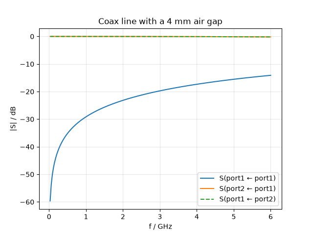
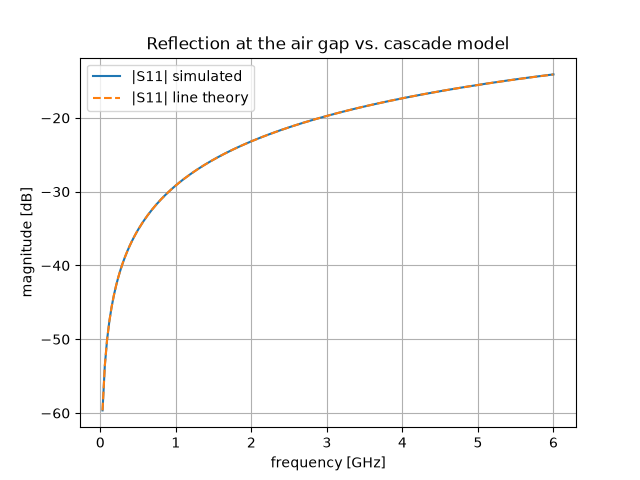

Note
Go to the end to download the full example code.
Exciting both ports: the full S-matrix#
The lines simulated so far were uniform and matched, so a single
excitation told the whole story. This tutorial puts a real
discontinuity into the coaxial line of the
previous tutorial — a short air gap in the
dielectric — and asks the questions that need the complete
scattering matrix: how much reflects from each side, and is the
device symmetric and reciprocal? One run call with both ports
excited delivers the full matrix; a three-section transmission-line
cascade provides the closed-form reference.
The problem#
Take the RG-58 class line from the previous tutorial and replace the middle 4 mm of polyethylene by air. The air-filled section has a higher line impedance (the \(\ln(r_o/r_i)\) is the same, but \(\sqrt{\varepsilon_r}\) drops from 1.5 to 1), so the wave sees two impedance steps, 4 mm apart. Each step reflects; the two reflections interfere. Transmission-line theory turns this into a closed form: cascade the ABCD matrices of the three sections and convert to S-parameters — our reference for the whole band.
A two-port has four S-parameters \(S_{ij}\), read “output i, input j”: \(S_{11}\) and \(S_{21}\) describe excitation at port 1, \(S_{22}\) and \(S_{12}\) excitation at port 2. A time-domain solver computes one excitation per run — so the full matrix of a 2-port needs two runs. You only have to say so; the analysis runs them back to back and merges the results.
import math
import tempfile
from pathlib import Path
import matplotlib.pyplot as plt
import numpy as np
import magnelio as mio
from magnelio import geo, ports
from magnelio.constants import *
r_i = 0.405e-3 # inner conductor radius [m]
r_o = 1.475e-3 # shield radius [m]
eps_r = 2.25 # polyethylene
L_pe = 4e-3 # each polyethylene section [m]
L_gap = 4e-3 # the air gap [m]
L = 2 * L_pe + L_gap
f_max = 6e9
Geometry: three dielectric sections#
Same construction as before — annuli around a continuous inner
conductor, PEC background as the shield — except that the dielectric
now comes in three axial sections. A loop over (start, length,
material) triples keeps the construction readable; this pattern
scales to structures with many more sections than three.
pec = mio.Material.pec()
pe = mio.Material.from_isotropic(name="polyethylene", epsilon=eps_r)
air = mio.Material.air()
model = mio.GeometryModel(background=pec)
inner = geo.Cylinder(origin=(0, 0, 0), radius=r_i, height=L, axis="z", material=pec)
sections = [(0.0, L_pe, pe), (L_pe, L_gap, air), (L_pe + L_gap, L_pe, pe)]
for z0, length, mat in sections:
outer = geo.Cylinder(origin=(0, 0, z0), radius=r_o, height=length, axis="z", material=mat)
model.add(geo.Difference(outer, inner))
model.add(inner)
model.add_port(
ports.PortAnalytical(
name="port1",
plane="zmin",
family="coax",
inner_radius=r_i,
outer_radius=r_o,
epsilon_r=eps_r,
)
)
model.add_port(
ports.PortAnalytical(
name="port2",
plane="zmax",
family="coax",
inner_radius=r_i,
outer_radius=r_o,
epsilon_r=eps_r,
)
)
mesh = mio.Mesh.from_geometry(model, mio.MeshControl(max_cell_size=0.12e-3), f_max=f_max)
print(f"grid: {mesh.Nx} x {mesh.Ny} x {mesh.Nz} cells")
grid: 25 x 25 x 102 cells
Two excitations, one call#
excited lists what to launch: bare port names mean “fundamental
mode”. The analysis performs one time-domain run per entry and
merges everything into a single result that answers for every
\(S_{ij}\).
analysis = mio.AnalysisScatteringTD(mesh=mesh, f_max=f_max, verbose=False)
result = analysis.run(excited=["port1", "port2"])
The quickest look is the built-in plot, which draws any selection of \(S_{ij}\) channels in one call:
fig, ax = result.plot_s(("port1", "port1"), ("port2", "port1"), ("port1", "port2"))
# S12 and S21 coincide to plotting accuracy -- that is reciprocity,
# checked numerically below; dash one so both stay visible.
for line in ax.lines:
if line.get_label().startswith("S(port1 ←") and "port2" in line.get_label():
line.set_linestyle("--")
ax.legend()
ax.set_title("Coax line with a 4 mm air gap")

Text(0.5, 1.0, 'Coax line with a 4 mm air gap')
Reading the matrix: symmetry and reciprocity#
Two structural statements can be checked immediately. The device is geometrically symmetric (the gap sits in the middle), so \(S_{22} = S_{11}\). And like every passive structure made of reciprocal materials it must be reciprocal: \(S_{12} = S_{21}\) — regardless of any symmetry. Both hold to numerical precision:
max |S12 - S21| (reciprocity): 7.60e-08
max |S11 - S22| (symmetry) : 4.54e-07
In practice these identities are cheap health checks: a broken reciprocity points at a solver or normalisation problem, a broken symmetry (in a geometrically symmetric model) at a meshing artefact.
Against transmission-line theory#
The analytic reference: three line sections in cascade, with the ideal impedances of the circular cross-section (\(Z_\mathrm{PE} = 51.7\,\Omega\), \(Z_\mathrm{air} = 77.5\,\Omega\)).
f = result.f_axis
z_pe = ETA0 / (2 * math.pi * math.sqrt(eps_r)) * math.log(r_o / r_i)
z_air = ETA0 / (2 * math.pi) * math.log(r_o / r_i)
def abcd_line(z, beta, length):
c, s = np.cos(beta * length), np.sin(beta * length)
return np.array([[c, 1j * z * s], [1j * s / z, c]])
s11_tl = np.empty(f.size, complex)
for k, fk in enumerate(f):
w = 2 * np.pi * fk
m = (
abcd_line(z_pe, w * math.sqrt(eps_r) / C0, L_pe)
@ abcd_line(z_air, w / C0, L_gap)
@ abcd_line(z_pe, w * math.sqrt(eps_r) / C0, L_pe)
)
a, b, c, d = m[0, 0], m[0, 1], m[1, 0], m[1, 1]
s11_tl[k] = (a + b / z_pe - c * z_pe - d) / (a + b / z_pe + c * z_pe + d)
fig, ax = plt.subplots()
ax.plot(f / 1e9, 20 * np.log10(np.abs(s11)), label="|S11| simulated")
ax.plot(f / 1e9, 20 * np.log10(np.abs(s11_tl)), "--", label="|S11| line theory")
ax.set_xlabel("frequency [GHz]")
ax.set_ylabel("magnitude [dB]")
ax.set_title("Reflection at the air gap vs. cascade model")
ax.grid(True)
ax.legend()
print(f"max ||S11|sim - |S11|theory|: {np.abs(np.abs(s11) - np.abs(s11_tl)).max():.1e}")

max ||S11|sim - |S11|theory|: 5.1e-04
The two curves agree to better than 0.001 in magnitude across the band. Note why the agreement is this good even though the previous tutorial showed the staircased impedance a few percent off the ideal value: both sections share the same staircased cross-section, so the impedance ratio between them — which is what sets the reflection — is almost exactly the ideal one. Errors that are common to both sides of a comparison cancel; S-parameters are full of such benign cancellations, and knowing about them is the difference between distrusting every percent and knowing where the percents matter.
Exporting the matrix#
S-parameter results leave Magnelio in standard formats.
to_touchstone writes the industry-standard .s2p file that
every circuit simulator reads; to_skrf hands the live matrix to
scikit-rf if it is installed.
s2p = Path(tempfile.mkdtemp()) / "coax_gap.s2p"
result.to_touchstone(s2p)
print(s2p.read_text().splitlines()[0])
print(f"... {len(s2p.read_text().splitlines())} lines")
! magnelio S-parameter export (power-wave S-parameters)
... 205 lines
Where to go next#
New in this tutorial: multiple excitations in one run call, the
\(S_{ij}\) bookkeeping, reciprocity/symmetry as built-in sanity
checks, a transmission-line cascade as reference, and the Touchstone
export. The next tutorial raises the frequency until the line
carries more than one mode — and the S-matrix gains mode indices on
top of the port indices.
Total running time of the script: (0 minutes 13.775 seconds)